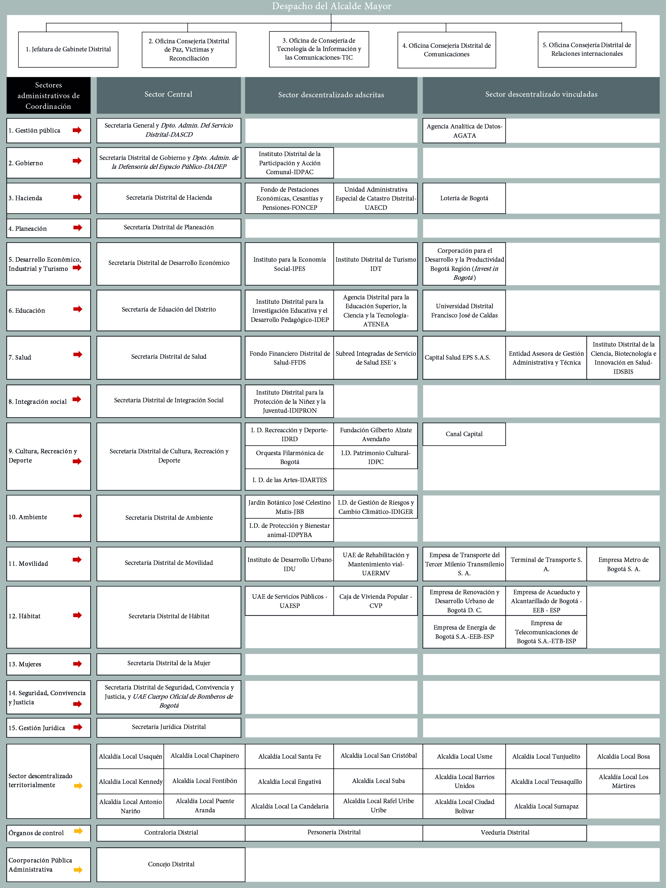

Unidad 2.3 Estructura administrativa del Distrito Capital
Como se estudió en unidades anteriores, la Constitución Política de 1991 introdujo importantes transformaciones en el Estado colombiano. Desde su artículo 1° Colombia adoptó un modelo de Estado descentralizado, que brinda a las entidades territoriales en las que está dividido, la autonomía para la toma de decisiones ¿Qué implicaciones conlleva fundamentar el Estado en la descentralización y la autonomía de las entidades territoriales?
Por un lado, la descentralización es un mecanismo que transfiere competencias, funciones, recursos, y capacidad de decisión a distintos niveles de la administración. Por lo general, dicha transferencia ocurre entre entidades de diferente jerarquía, de la mayor a la menor.
La descentralización está dividida en dos formas: la descentralización por servicios, en la cual se transfiere la tarea a una institución, empresa, organización o persona que cuente con la capacidad técnica y especializada para desarrollar la tarea. La segunda es la descentralización territorial, en la cual la transferencia de funciones se realiza dentro de una parte del territorio, sea este un municipio, región, departamento, entre otros 1.
Por otro lado, la autonomía de las entidades territoriales se refiere a la capacidad de autogobierno, es decir, regirse por autoridades propias, desarrollar competencias correspondientes, administrar los recursos, recaudar impuestos, entre otros 2.
En conjunto, fundamentar el Estado en estos principios requiere una capacidad estatal sólida y una ciudadanía confiada, con el propósito de garantizar bienes y servicios, promover el bien común y fortalecer la democracia en el territorio.
1.1. Acuerdo Distrital 257 de 2006
En Bogotá D. C., la normativa que contiene la estructura y funcionamiento de las entidades y órganos públicos es el Acuerdo Distrital 257 de 2006. Este establece principios de función administrativa, modalidades de acción, estructura del sector central y descentralizado, funcionamiento de las localidades, mecanismos de control y la división por sectores administrativos.
Los principios bajo los cuales debe desarrollarse la función administrativa son la democracia, pluralismo, participación; la transparencia y buena fe en función de la confianza; la igualdad para hacer efectivos los derechos humanos; los principios de coordinación, concurrencia, subsidiariedad y complementariedad que permitan al ejercicio administrativo alcanzar sus fines colaborando con otras autoridades. La estructura administrativa de Bogotá se divide en los sectores central, descentralizado y localidades.
1.2. Sector central
El sector central está integrado por la Alcaldía Mayor, los Consejos Superiores de Administración Distrital, las Secretarías de Despacho, los Departamentos Administrativos y las Unidades Administrativas Especiales sin personería Jurídica.
Las Secretarías de Despacho son organismos con autonomía administrativa y financiera encargados de formular y adoptar políticas, planes, programas o proyectos del sector administrativo. También, orientan la acción de las entidades del sector, incluso si son del sector descentralizado.
Hasta la fecha, el Distrito cuenta con 15 Secretarías de Despacho: Secretaría General, Secretaría Distrital de Gobierno, Secretaría Distrital de Hacienda, Secretaría Distrital de Planeación, Secretaría Distrital de Desarrollo Económico, Secretaría de Educación del Distrito, Secretaría Distrital de Salud, Secretaría Distrital de integración Social, Secretaría Distrital de Cultura, Recreación y Deporte, Secretaría Distrital de Ambiente, Secretaría Distrital de Movilidad, Secretaría Distrital del Hábitat, Secretaría Distrital de la Mujer, Secretaría Jurídica Distrital y Secretaría Distrital de Seguridad, Convivencia y Justicia.
Por su parte, los Departamentos Administrativos son organismos con autonomía administrativa y financiera, cuya función es brindar la asesoría técnica a la formulación de las políticas, planes o programas que vaya a adoptar la Secretaría de Despacho. Bogotá cuenta con 2 departamentos: Dpto. Administrativo del Servicio Civil Distrital-DASCD, que hace parte del sector Gestión Pública, y el Dpto. Administrativo de la Defensoría del Espacio Público-DADEP, parte del sector Gobierno.
Por otro lado, están las Unidades Administrativas Especiales-UAE sin personería jurídica, organismos con autonomía administrativa y financiera que realizan funciones para el desarrollo de los programas o proyectos del sector administrativo al que pertenecen. En Bogotá solamente una UAE funciona en el sector central, esta es el Cuerpo Oficial de Bomberos de Bogotá, del sector administrativo Seguridad, Convivencia y Justicia.
El Consejo de Política Económica y Social del Distrito Capital-CONPES D. C., es una autoridad de planeación territorial de la cual forman parte la Alcaldía y las Secretarías de Despacho, con el fin de orientar las temáticas para el desarrollo socioeconómico, aprobar las políticas públicas y atender las necesidades de la ciudad. Finalmente, los Consejos Superiores de la Administración Distrital son una instancia de coordinación para la adopción de políticas o decisiones que vinculan organismos del Distrito.
1.3. Sector descentralizado
El sector descentralizado por servicios está conformado por Establecimientos Públicos, las Unidades Administrativas Especial-UAE con personería jurídica, las Empresas Industriales y Comerciales del Estado, las Empresas Sociales el Estado, las Empresas de Servicios Públicos Domiciliarios Oficiales, las Sociedades de Economía Mixta, las Sociedades entre entidades públicas, las Entidades Descentralizadas Indirectas y los Entes Universitarios Autónomos.
Estas entidades deben participar en la formulación de planes, proyectos, programas o políticas del sector administrativo al que pertenecen, así como garantizar la prestación de servicios y contribuir en el cumplimiento de las metas del sector.
Por su lado, los Establecimientos Públicos son organismos responsables de ejercer la función administrativa para la prestación de servicios públicos. Se caracterizan por tener personería jurídica, autonomía administrativa y financiera, patrimonio independiente y regulación bajo el derecho público.
En el organigrama del Distrito figuran varios de estos establecimientos: el Instituto Distrital de la Participación y Acción Comunal-IDPAC, adscrito al sector gobierno; el Fondo de Prestaciones Económicas, Cesantías y Pensiones-FONCEP, adscrito al sector Hacienda; el Instituto para la Economía Social-IPES, Instituto Distrital de Turismo-IDT, adscritos al sector desarrollo económico, industria y turismo; el Instituto Distrital para la Investigación Educativa y el Desarrollo Pedagógico-IDEP, adscrito al sector educación; el Fondo Financiero Distrital de Salud-FFDS, adscrito al sector salud; el Instituto Distrital para la Protección de la Niñez y la Juventud-IDIPRON, adscrito al sector integración social.
Así mismo, se destacan entidades de sector cultura, recreación y deporte como el Instituto Distrital de Recreación y Deporte-IDRD, la Orquesta Filarmónica de Bogotá-OFB, Fundación Gilberto Alzate Avendaño-FUGA, Instituto Distrital de Patrimonio Cultural-IDPC, Instituto Distrital de las Artes-IDARTES, todas adscritas al sector cultura, recreación y deporte; el Jardín Botánico de Bogotá-JBJCM, Instituto Distrital de Bienestar y Protección Animal-IDPYBA, Instituto Distrital de Gestión de Riesgos y Cambio Climático-IDIGER, adscritos al sector ambiente; el Instituto de desarrollo Urbano-IDU, adscrito al sector movilidad; por último, la Caja de Vivienda Popular-CVP, adscrita al sector hábitat.
Por otro lado, las UAE con personería jurídica son entidades distritales de carácter técnico, con autonomía administrativa, patrimonial y personería jurídica, lo que implica derechos y obligaciones 3. Deben operar bajo el régimen jurídico mediante el cual fueron creadas. Estas incluyen: la UAE de Catastro Distrital-UAECD, del sector hacienda; la UAE de Rehabilitación y Mantenimiento Vial-UAERMV, del sector movilidad; y UAE de Servicios Públicos-UAESP del sector hábitat.
Las Empresas Industriales y Comerciales del Estado-EICE son entidades que, pese a ser regidas por el derecho privado, tienen naturaleza jurídica pública 4 y sus fines están en el bien común. De estas hacen parte la Lotería de Bogotá (sector Hacienda); el Canal Capital (sector Cultura, Recreación y Deporte); la Empresa de Transporte Tercer Milenio Transmilenio S.A.S. y la Empresa Metro de Bogotá S. A. (sector Movilidad); la Empresa de Renovación y Desarrollo Urbano de Bogotá D. C. (sector Hábitat).
Las Empresas de Servicios Públicos Domiciliarios Oficiales son entidades con autonomía administrativa y financiera que se encargan de la prestación de servicios públicos domiciliarios. Entre ellas se encuentra la Empresa de Acueducto, Alcantarillado y Aseo de Bogotá- EAB- ESP, la Empresa de Energía de Bogotá S. A.–EEB-ESP y la Empresa de Telecomunicaciones de Bogotá S. A.-ETB-ESP, todas adscritas al sector hábitat.
Por otro lado, las Empresas Sociales del Estado son entidades con personería jurídica, patrimonio propio y autonomía administrativa, creadas para la prestación directa de servicios de salud 5. En Bogotá, estas conforman las Subredes Integradas de Servicios de Salud de Bogotá, divididas en: Subred Integrada de Servicios de Salud Norte E.S.E., Subred Integrada de Servicios de Salud Sur E.S.E., Subred Integrada de Servicios de Salud Sur Occidente E.S.E. y Subred Integrada de Servicios de Salud Centro Oriente E.S.E.
Así mismo, los entes autónomos universitarios son instituciones con autonomía académica, administrativa y financiera que se encargan de la oferta de servicios de educación superior a los ciudadanos. A nivel Distrital, el ente autónomo universitario es la Universidad Distrital Francisco José de Caldas.
1.4. Sector localidades
El sector de las localidades está conformado por las Alcaldías locales y las Juntas Administradoras Locales-JAL. Bogotá está dividida en 20 localidades, que agrupan un total de 1.958 barrios. Cada localidad cuenta con un alcalde o alcaldesa y entre 7 y 11 ediles, todos elegidos por voto popular 6.
Las Alcaldías Locales, como parte del sector descentralizado, ejercen funciones similares a la Alcaldía Mayor, con la diferencia de que su jurisdicción se limita al territorio de su respectiva localidad. Estas entidades tienen la responsabilidad de liderar, coordinar, formular y adoptar políticas, planes, programas destinados al mejoramiento de esta. Entre ellos, el Plan de Desarrollo Local-PDL. Por su parte, los ediles, miembros de las Juntas Administradoras Locales tienen funciones como adoptar el PDL, la vigilar de la prestación de servicios distritales y las inversiones realizadas con recursos públicos, presentar proyectos de inversión y apoyar el presupuesto anual de los fondo de desarrollo de la localidad7 .
1.5. Órganos de control y corporación pública administrativa
En el organigrama del Distrito se incluyen cuatro órganos que no forman parte de las clasificaciones previamente expuestas: los órganos de control y la corporación pública administrativa. Por un lado, los órganos de control están conformados por la Contraloría Distrital, la Personería de Bogotá y la Veeduría Distrital. Cada uno de estos es responsable de ejercer algún distintos tipos de control sobre la administración pública: el control fiscal, control disciplinario sobre la conducta de los servidores públicos, y el seguimiento al cumplimiento de deberes, metas y funciones institucionales.
Por otro lado, la corporación pública administrativa está representada por el Concejo de Bogotá, entidad encargada de ejercer funciones normativas, de control político, representación ciudadana y aprobación del presupuesto distrital. Véase la Unidad II del Componente II para ampliar la información.
Imagen 5. Organigrama de Bogotá

Fuente: Elaboración Sociedad de Mejoras y Ornato de Bogotá con base en el Acuerdo Distrital 257 de 2006 del 30 de noviembre “por el cual se dictan normas básicas sobre la estructura, organización y funcionamiento de los organismos y de las entidades de Bogotá, Distrito Capital, y se expiden otras disposiciones”.Sección 2.3.2 La organización administrativa del Distrito Capital Sección 2.3.3 Presupuesto distrital Sección 5.1.1 Sistema vial y de transporte Sección 5.1.2 Sistema de Servicios Públicos Sección 5.1.3 Sistema de espacio público Sección 5.2.1 Sistema de equipamientos
Footnotes
-
Honorio Henríquez; Hernando Gómez: Oswaldo Aharón. Elementos básicos del Estado colombiano (Bogotá: Escuela de Administración Pública, Departamento Nacional de Planeación, 2011), 49-53. Disponible en: Elementos básicos del Estado colombiano ↩
-
Ibid. 45. ↩
-
Concepto 094491 de 2021, artículo 82. Función Pública, 2021. Disponible en: Concepto 094491 de 2021 ↩
-
Alcaldía de Bogotá. Documentos para Empresas Industriales y Comerciales del Estado: Naturaleza Jurídica (Bogotá, Sentencia 691 de 2007, Corte Constitucional). Disponible en: _Documentos para Empresas Industriales y Comerciales del Estado ↩
-
Concepto 323361 de 2021, Departamento Administrativo de la Función pública, 2021. Disponible en: Concepto 323361 de 2021. ↩
-
Alcaldías Locales, Secretaría de Gobierno de Bogotá, s.f. Disponible en: Alcaldías Locales ↩
-
“Qué son las Juntas Administradoras Locales”, Bogotá cómo vamos, s.f. Disponible en: “Qué son las Juntas Administradoras Locales” ↩